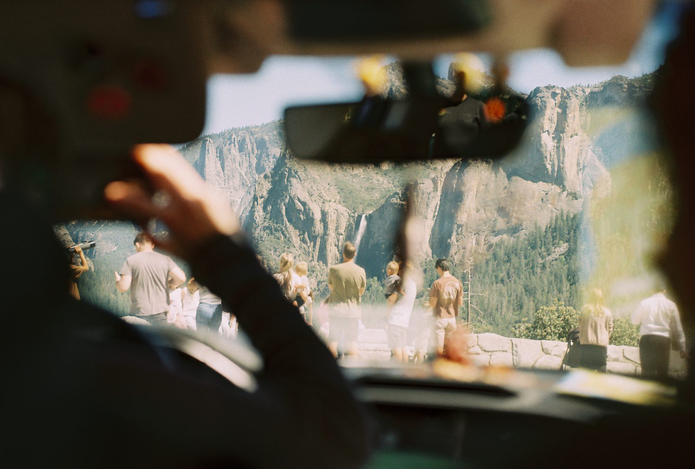

San Jose, California
ABOUT KIANA

Kiana Lee shoots 35mm film around San Jose and anywhere she can reach on a tank of gas: Yosemite, redwood groves, and the cliffs past Santa Cruz. Everything here came from a real roll. No presets. No do-overs. Just thirty-six frames and whatever happens.
She likes the moments between poses: the laugh that starts too early, the wind that will not cooperate, even the light leak that somehow makes the frame. If being photographed makes you nervous, you're in good hands.
HOW A SESSION WORKS
- 01 Pick a place, or let her choose somewhere you would never think of.
- 02 Shoot a roll or two. It's slow, unposed, and mostly a walk.
- 03 The film goes to the lab. Development and scans take about a week.
- 04 You get every keeper as a full scan. Prints are available too.
WHAT SHE SHOOTS
- Grad portraits in the redwoods or on campus
- Couples, families & friends
- Landscape prints from Yosemite & the coast
- Small events, shot on film
Now booking fall sessions in San Jose & around the Bay. Book a session →